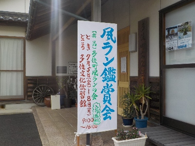

多伎文化伝習館で開催された風ラン鑑賞会に行きました。
2024/07/06

ネットや書籍で風蘭を見ていましたが、実物をいろいろ観るのは初めてです。
赤とか黄色の風蘭は派手でいいですね。持っていないので欲しくなりました。
苔やシダ等の違う植物と一緒に植えるのもいいなと思いました。
人が工夫を凝らして作ってる作品を見るのはいいですね。いい参考になりました。
島根県出雲市多伎町口田儀762番地3
2024/07/06

ネットや書籍で風蘭を見ていましたが、実物をいろいろ観るのは初めてです。
赤とか黄色の風蘭は派手でいいですね。持っていないので欲しくなりました。
苔やシダ等の違う植物と一緒に植えるのもいいなと思いました。
人が工夫を凝らして作ってる作品を見るのはいいですね。いい参考になりました。